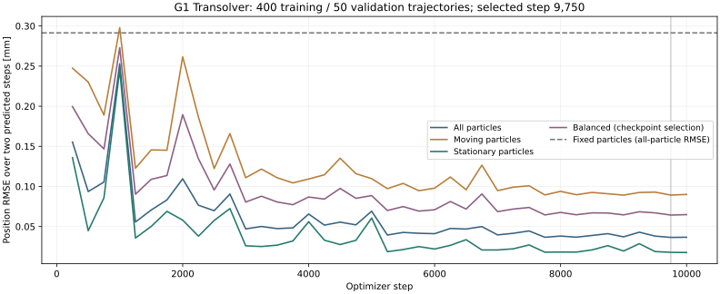
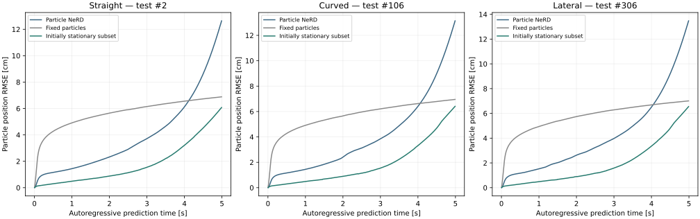

Dataset · Training · Recorded G1 motion · Coupled simulation · Run locally
20 October 2026 · OSMO pool isaac-lab-l40s-03 · architecture: Transolver.
Completed: 500-trajectory data collection, eight-GPU training, and extended coupled evaluation with 10 s requested. A smaller contact-solver relaxation allows longer recordings; physical accuracy remains insufficient. Particle-only videos with recorded G1 motion and coupled videos with force profiles are below. This experiment uses one fixed sand material.
| Parameter | Setting |
|---|---|
| Initial sand volume | 3 × 3 × 0.3 m; initial sand surface z = 0; rigid ground beneath the sand and native retaining walls |
| MPM grid / particles | 0.04 m / 88,360 material particles per environment |
| Sand material | Density 1,600 kg/m³; Young modulus 10¹⁵ Pa; Poisson ratio 0.3; internal friction 0.48; yield pressure 10¹⁵ Pa; tensile yield ratio, yield stress, hardening, dilatancy and viscosity all zero |
| Rigid contact friction | 1.0 on robot feet; 0.8 on fixed boundary boxes |
| Physics and recording | 200 Hz, one state every 5 ms |
| Robot policy | Pretrained G1 policy at 50 Hz; native joint actuators and dynamic robot motion |
| Collected dataset | 500 trajectories, up to 5 s each; 400 training / 50 validation / 50 test |
| Motion coverage | 350 locomotion, 75 perturbed-policy, 50 standing and 25 zero/random-action diagnostics; randomized initial heading and commanded direction |
| Pilot subset | 50 trials stratified across motion groups and immutable splits: 17 training / 17 validation / 16 test |
| Storage | 902.52 GB recorded in cloud storage; 484,184 frames. A full five-second trajectory is approximately 1.86 GB with LZF compression. Only checkpoints and a small evaluation subset are downloaded locally. |
Each record contains particle positions and velocities, robot body poses and velocities, joint state, explicitly applied generalized force (Control.joint_f, excluding native actuator output), policy action, command, and material force/torque on each foot. Static records include particle masses, collision-box geometry and material parameters. Native terminations end the affected trajectory; reset transitions are excluded.
Inspect all 500 planned command paths. These are integrated commands, not measured robot base paths.
Open full-resolution coverage plot · Dataset audit summary and measured trajectories.
Transolver receives three particle-position frames, current collider geometry and velocity, and material features. It predicts displacement for the next 5 ms. The network has four layers, 128 hidden channels, four attention heads and 64 physics slices. All 88,360 particles are processed; no region selector is used.
Training uses two autoregressive prediction steps (10 ms) and a loss that separately averages moving and stationary particle errors. Collider motion follows the reference recording during training. The full run uses 400 training trajectories, eight GPUs and 10,000 optimizer steps, initialized from the 2,000-step pilot checkpoint. Optimization took 29.2 minutes, excluding setup, data transfer and dataset audit.
The 50 validation trajectories select the checkpoint: step 9,750. Only after optimization finished, the selected checkpoint was evaluated once on one fixed-seed two-step window from each of the 50 test trajectories. Test data did not select weights or settings.
| Two-step position RMSE | Validation (50 trajectories) | Test (50 trajectories) |
|---|---|---|
| All particles | 0.037 mm | 0.041 mm |
| Moving particles | 0.089 mm | 0.101 mm |
| Stationary particles | 0.018 mm | 0.018 mm |
| Balanced moving/stationary | 0.064 mm | 0.073 mm |
| Fixed-particle baseline (all particles) | 0.291 mm | 0.308 mm |
RMSE uses the 3D position-error magnitude, averaged across particles and the two predicted frames. For short-window training, a particle is classified as moving when its reference displacement from the initial history frame exceeds 0.125 mm. Balanced RMSE gives the two groups equal weight.

Short-horizon test measurements and checkpoint checksum · Model configuration and training/validation IDs.
Both panels use exactly the same recorded G1 motion. Left: recorded MPM particles. Right: particle NeRD predictions. The model receives recorded robot body positions, orientations and velocities at every prediction step. Only the first three recorded particle frames initialize the particle history; afterward, predicted particle positions feed the next step. No force estimator or predicted robot dynamics is used in this evaluation.
Each prediction advances 5 ms (200 Hz). Training used two consecutive prediction steps, or 10 ms, not 0.5 s. These evaluations continue autoregressively for 4.99 s without resetting particles to the reference. Videos sample the stored predictions at 25 fps, from recorded time 0.015 to 4.975 s.
Conclusion: particle motion drifts even when the robot follows the reference motion exactly. At 4.99 s, particle-position RMSE is 12.6–13.5 cm, worse than keeping particles at their initial positions (6.9–7.0 cm). This demonstrates a particle-prediction failure independent of force-estimation feedback.
| Test scenario | RMSE after 0.5 s | RMSE after 4.99 s | Fixed-particle baseline after 4.99 s |
|---|---|---|---|
| Straight, test #2 | 1.16 cm | 12.64 cm | 6.88 cm |
| Curved, test #106 | 1.16 cm | 13.14 cm | 6.95 cm |
| Lateral, test #306 | 1.17 cm | 13.47 cm | 7.01 cm |
RMSE measures the 3D position difference from MPM, averaged over all 88,360 particles. The stationary-particle plot includes particles displaced less than 1 mm from their initial positions in the MPM reference at that time. The fixed-particle baseline retains the particle positions at the final initialization frame.
Open video · Per-step measurements.
Open video · Per-step measurements.
21 October update. The previous recordings were shortened by numerical failure. A captured contact problem from validation scenario #12 identifies one cause: the fixed Jacobi relaxation factor 0.1 can make simultaneous contact updates diverge. At exactly the same particle and foot state, after 200 iterations it produces 22,715 N vertical force on the foot. Relaxation 0.02 gives 313 N; after 2,000 iterations it gives approximately 315 N. No particle-network prediction or material parameter changes in this comparison.
The new runs use relaxation 0.02, the same step-9,750 checkpoint, material-mass multiplier 100, and 200 solver iterations. This setting was checked first on validation #12, which reached 7.96 s and ended through a native termination without a nonfinite state. At a fixed iteration limit, changing relaxation also changes numerical error; 200 iterations do not guarantee convergence. These follow-ups reuse previously evaluated test scenarios and are not a new untouched test set.
| Scenario | Original learned run, α = 0.1 | Extended learned run, α = 0.02 | Extended MPM reference | Pelvis-position RMSE |
|---|---|---|---|---|
| Straight, #2 | 1.150 s | 5.98 s (native termination) | 10.00 s (duration) | 11.6 cm over 5.98 s |
| Curved, #106 | 3.145 s | 10.00 s (duration) | 10.00 s (duration) | 45.2 cm over 10.00 s |
| Lateral, #306 | 2.465 s | 8.94 s (native termination) | 7.88 s (native termination) | 14.5 cm over 7.88 s |
The robot policy runs at 50 Hz and simulation at 200 Hz. After the original command switch, its final command remains active through the extended horizon. Each run stops at 10 s, native termination, or a nonfinite state. No termination rules were disabled. Both lateral runs end when the robot leaves the permitted workspace. The straight learned video shows loss of balance near its termination. Training trajectories were at most five seconds.
Pelvis-position errors use each pair’s common valid interval; different durations prevent direct ranking across scenarios. Force profiles compare evolving robot trajectories and therefore are not isolated force-estimation errors. The smaller relaxation removes divergence in the captured solve and permits longer evaluation, but particle drift and inaccurate robot motion remain visible.
Controlled contact-solve replay · Extended results · Exact launch commands.
Full-duration robot trajectory and force plots · Measurements and solver diagnostics.
Full-duration robot trajectory and force plots · Measurements and solver diagnostics.
Full-duration robot trajectory and force plots · Measurements and solver diagnostics.
The selected model is not yet a usable G1 sand simulator. All three particle rollouts complete 4.99 s of prediction with recorded robot geometry, but accumulate more position error than the fixed-particle baseline. The fully coupled runs fail before five seconds. All three matched native MPM reference runs complete five seconds.
Particle evaluation: initialize from the first three recorded particle frames, then feed predictions back into the model. Robot geometry follows the recorded motion. The table reports particle error at the final recorded time (4.99 s of prediction), not an average over the entire trajectory.
Coupled evaluation: initialize matched particle/robot positions, then run particle NeRD, the analytical force estimator and native robot dynamics. The frozen policy observes each run’s evolving state. No MPM solve runs during learned inference. The estimator uses independent virtual-foot responses, material-mass multiplier 100 and 200 solver iterations; it does not use the full articulated contact-response matrix.
| Reserved scenario | Final particle RMSE | Fixed-particle RMSE | Learned coupled run | Pelvis-position RMSE |
|---|---|---|---|---|
| Straight, test #2 | 12.6 cm | 6.9 cm | 1.150 s — simulation error | 3.4 cm over 1.150 s |
| Curved, test #106 | 13.1 cm | 7.0 cm | 3.145 s — simulation error | 8.6 cm over 3.145 s |
| Lateral, test #306 | 13.5 cm | 7.0 cm | 2.465 s — simulation error | 7.3 cm over 2.465 s |
Pelvis position refers to the robot pelvis body-frame origin. Its RMSE is measured over each run’s shared valid interval; different durations prevent direct ranking across rows. Heights in the plots are measured above the initial sand surface. These are preselected test scenarios, not selected successful examples.

Conclusion: the model predicts short reference-conditioned motion accurately, but errors accumulate when its predictions become subsequent inputs. Coupled simulation also develops force spikes and nonfinite states. These tests establish failure of the current combined pipeline; they do not isolate whether particle error, the contact approximation, or their feedback causes each instability. The full-data model improves long-rollout accuracy over the pilot on the same validation recording #12 (2.01 m → 0.134 m), but the larger dataset and additional optimization, with this two-step objective and current coupling, have not produced reliable five-second simulation.
All final measured results · Exact local commands, exit codes and checkpoint checksum. Force-profile differences between diverging robot trajectories are not force-estimation errors measured on identical motion.
Robot trajectory, pelvis height and foot-force plots · Particle-rollout errors · Measured results.
Robot trajectory, pelvis height and foot-force plots · Particle-rollout errors · Measured results.
Robot trajectory, pelvis height and foot-force plots · Particle-rollout errors · Measured results.
This reproduces the experimental learned simulator, including its current instability.
cd ~/isaac/IsaacLab
export PYTHONPATH="$HOME/isaac/IsaacLab-particle-nerd/examples${PYTHONPATH:+:$PYTHONPATH}"
CHECKPOINT="$HOME/isaac/particle_nerd/experiments/g1-nerd-osmo-20261020/full-training-final/model/best.pt"
uv run --no-sync python -m particle_nerd.g1.play \
--checkpoint "$CHECKPOINT" --output /tmp/g1-learned \
--duration 10 --effective-mass-scale 100 --iterations 200 \
--contact-relaxation 0.02 --viz newton_rtxCode: ~/isaac/IsaacLab-particle-nerd/examples/particle_nerd/g1/. Omit --checkpoint for the native MPM reference. Add the same schedule, trial ID and seed to both runs for a matched comparison; the evaluation manifest records those arguments.
The pilot models are not usable sand simulators. All 50 recorded trajectories passed the integrity audit: 44 reached five seconds and six ended at native termination. The dataset contains 46,110 frames and 85.95 GB. The fixed split contains 17 training, 17 validation and 16 test trajectories. Audit summary.
| Checkpoint | 10 ms validation RMSE | 4.99 s rollout RMSE, validation #12 |
|---|---|---|
| Pilot, step 600 | 0.192 mm | 3.19 m |
| Pilot, selected final checkpoint, step 2,000 | 0.126 mm | 2.01 m |
| Fixed-particle baseline | 0.408 mm | 0.070 m |

Short validation errors average two predicted steps across 17 validation trajectories. The long rollout initializes three particle frames once, then uses only its own particle predictions and the recorded robot geometry. The two tests measure different prediction horizons.
The final pilot's pelvis-position RMSE is 0.519 m over this paired five-second run; final position difference is 0.687 m. Pelvis height ends at 0.459 m above the initial sand surface, versus 0.617 m for MPM. These are diverging closed-loop motions, so force-profile differences are not force-estimation error on identical motion. Effective material-mass multiplier: 10; contact solver: 50 iterations.

Final pilot robot and force plots · Measured final pilot results.
The earlier G1 force study used effective material-mass multiplier 100 and 200 solver iterations. Applying those settings to validation #12 also fails: native termination at 2.18 s. The multiplier-10 comparison above uses 50 iterations, so this is a comparison of configurations, not an isolated test of one parameter. The final full-data model uses this same prior G1 configuration for all three preselected dynamic test scenarios.
Paired animation covers the shared recorded interval; the reference force curves retain the full five-second context. Measured comparison.
Particles visibly drift through the rigid floor. Particle errors · Measured results.

Full 500-trajectory workflow · Task dashboard · Resource metrics
Pilot training workflow · Task dashboard · Resource metrics. Pilot training completed successfully after its dataset audit. The full-data workflow completed successfully on eight GPUs after the mandatory dataset audit.
Full-dataset training workflow · Task dashboard · Resource metrics. Eight GPUs; 10,000 optimizer steps; initialization from the selected pilot checkpoint. Full dataset audit precedes optimization. The validation set selects the model; afterward, a separate evaluation reports 10 ms prediction errors on all 50 test trajectories. Local long-rollout evaluation used the preselected straight (#2), curved (#106), and lateral (#306) test scenarios.